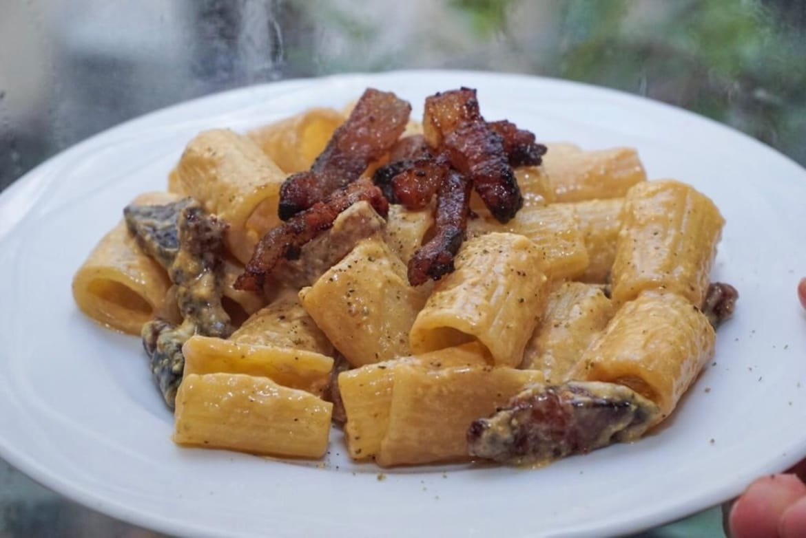

Home
Pasta Carbonara

Description
Authentic pasta carbonara relies on just five core ingredients and a specific technique to create a creamy sauce without using any actual cream.
Ingredients
- Pasta
- Cured Pork
- Cheese
- Black Peppe
Preparation Steps
- Render the Pork
- Boil the Pasta
- Mix the Sauce Base
- Emulsify
- Toss Vigorously